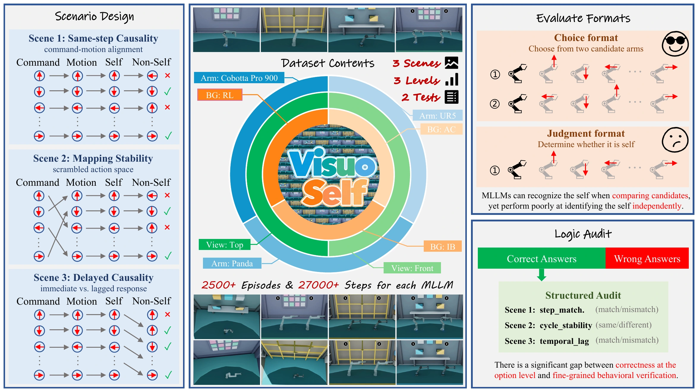
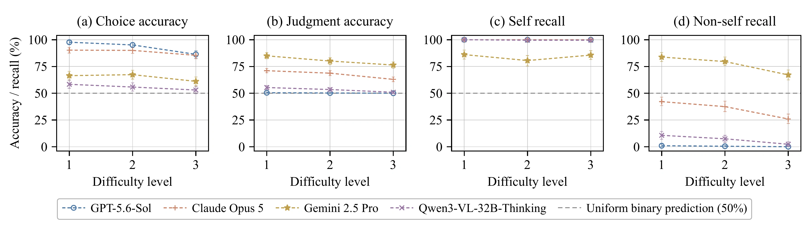
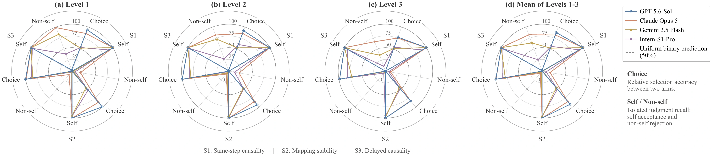

Embodied AI · Visuomotor Contingencies
VisuoSelfEmbodied Self-Recognition
via Visuomotor Contingencies
Shanghai Jiao Tong University
- 2,592
- balanced simulation episodes
- 27,648
- command–observation steps
- 3 × 3
- causal scenes × difficulty levels
- 2
- matched evaluation formats
Abstract
Agency attribution—the ability to distinguish the sensory consequences of one’s own actions from externally generated effects—is fundamental to bodily self-awareness and adaptive control. Yet embodied evaluations of multimodal large language models (MLLMs) largely emphasize perception, planning, and task success, leaving sensorimotor self-attribution underexamined. We present VisuoSelf, a controlled investigation of whether MLLMs can identify the robotic body associated with a motor-command stream. The frozen dataset contains 2,592 balanced simulated episodes and 27,648 temporally aligned command–observation steps across robot morphologies, viewpoints, and environments. Given complete commands and ordered visual evidence, models either select the controlled arm from two candidates or classify one arm as self or non-self.
Three scenarios isolate same-step command–motion correspondence, hidden command-to-motion mapping stability across repeated cycles, and delayed imitation at three difficulty levels; physical robot experiments complement the simulation. Strong relative selection often fails to transfer to isolated judgment, revealing systematic self-attribution bias that also persists in physical recordings. Structured audits further separate correct answers from complete contingency reconstruction. By exposing failures hidden by relative-selection accuracy, VisuoSelf connects cognitive science with embodied AI and provides a diagnostic criterion for transferable self-attribution, informing the development of agents that can distinguish their own control from external motion.
“Which arm is me?”
Requires a relative ranking.“Is this arm me?”
Requires a self/non-self boundary.We study functional agency attribution: identifying what is under an agent’s control. The mirror in Figure 1 is conceptual, rather than an experimental setup.
Controlled evidence. Matched decisions.
Benchmark Overview
Three interventions separate command–motion correspondence, mapping stability, and temporal delay. Difficulty changes the non-self behavior while the self process stays fixed.

EnlargeDoes each motion follow the current command?
Same-step causality
The self arm executes the current command. The non-self arm reorders the same eight-command multiset, preserving total motion while breaking stepwise correspondence.
Audit targetMatch or mismatch at every step
Level 1 · 8 of 8 non-self actions differ from the current command.
An illustration of the protocol; models receive the complete command trace and rendered visual evidence.
Appearance is controlled.
Franka Panda, UR5, and Denso Cobotta Pro 900; three environments and two viewpoints, balanced within each experimental cell.
Every model sees the same trace.
Frozen, temporally ordered Before, After, and Signed Change panels accompany the complete motor-command stream.
Correct answers get a closer look.
Structured audits check stepwise correspondence, cross-cycle stability, or exact lag, separating answer correctness from causal reconstruction.
Quantitative evaluation
Main Results
Strong choice accuracy can coexist with near-chance isolated judgment.
Class-specific recall exposes a systematic tendency to accept non-self as self.
Complete simulation benchmark
Table 4. Simulation results across evaluation formats
Fourteen MLLMs and a random baseline. Gemini 2.5 Pro leads isolated judgment; GPT-5.6-Sol leads relative selection. Class-specific recall reveals the difference.
| Model | Choice accuracy | Judgment accuracy | Judgment recall | |||||||
|---|---|---|---|---|---|---|---|---|---|---|
| S1 | S2 | S3 | Avg. | S1 | S2 | S3 | Avg. | Self | Non-self | |
| GPT-5.6-Sol | 87.5 | 92.1 | 99.5 | 93.1 | 50.0 | 50.0 | 50.7 | 50.2 | 100.0 | 0.5 |
| Claude Opus 5 | 81.9 | 84.7 | 99.1 | 88.6 | 58.6 | 53.0 | 91.2 | 67.6 | 100.0 | 35.2 |
| Claude Sonnet 5 | 56.3 | 52.5 | 86.6 | 65.1 | 50.0 | 50.0 | 51.6 | 50.5 | 100.0 | 1.1 |
| Gemini 2.5 Pro | 53.0 | 56.7 | 85.2 | 65.0 | 66.0 | 79.4 | 96.1 | 80.5 | 84.1 | 76.9 |
| GPT-4o | 55.1 | 49.5 | 87.5 | 64.0 | 50.0 | 50.0 | 50.2 | 50.1 | 100.0 | 0.2 |
| Intern-S1 | 50.2 | 49.5 | 92.1 | 64.0 | 50.0 | 50.0 | 50.2 | 50.1 | 100.0 | 0.2 |
| Intern-S1-Pro | 56.0 | 50.2 | 84.5 | 63.6 | 49.8 | 50.0 | 60.9 | 53.5 | 94.4 | 12.7 |
| Qwen3-VL-8B-Thinking | 54.2 | 49.8 | 85.9 | 63.3 | 50.2 | 50.0 | 49.5 | 49.9 | 99.1 | 0.8 |
| GLM-5V-Turbo | 51.9 | 46.8 | 88.0 | 62.2 | 49.8 | 50.0 | 61.3 | 53.7 | 99.7 | 7.7 |
| Gemini 2.5 Flash | 52.1 | 46.5 | 79.4 | 59.3 | 50.5 | 49.8 | 81.9 | 60.7 | 98.9 | 22.5 |
| GLM-4.6V | 56.5 | 49.1 | 71.1 | 58.9 | 50.0 | 50.0 | 50.0 | 50.0 | 100.0 | 0.0 |
| Kimi K2.5 | 51.9 | 55.8 | 61.3 | 56.3 | 49.8 | 48.1 | 49.3 | 49.1 | 98.0 | 0.2 |
| Qwen3-VL-32B-Thinking | 44.9 | 49.3 | 72.9 | 55.7 | 49.8 | 50.0 | 60.0 | 53.2 | 99.7 | 6.8 |
| Intern-S1-Mini | 49.3 | 48.1 | 55.6 | 51.0 | 50.2 | 50.2 | 50.0 | 50.2 | 99.4 | 0.9 |
| Random | 50.9 | 51.6 | 48.4 | 50.3 | 49.8 | 55.6 | 49.5 | 51.6 | 53.2 | 50.0 |
S1: same-step causality · S2: mapping stability · S3: delayed causality. S1–S3 average over the three difficulty levels; Avg. averages scenes. Each format uses 1,296 episodes per model. Recall uses all judgment episodes. Invalid outputs count as incorrect. Random is excluded from best/second-best markings and remains last when sorting.
Download Table 4 (CSV)Figure 4 / Difficulty trajectories
As non-self becomes more similar to self.

EnlargeCorrect selection can fail to transfer to both matched isolated judgments. Aggregate accuracy alone misses this inconsistency.
Complementary real-robot recordings include 108 judgment episodes and 1,152 steps. Self-attribution bias also persists in physical recordings.
Scene-by-scene profiles
A closer look at the attribution gap.

EnlargeRead. Inspect. Build on it.
Resources
The manuscript, original figures, result data, and citation.
Read the paper
Method, full results, structured audits, and appendix.
PDF 02 / Project repositoryVisuoSelf on GitHub
Visit the VisuoSelf project repository on GitHub.
GitHub 03 / Main resultsExplore Table 4
All fourteen models, both decision formats, and class recall.
CSV 04 / Get in touchContact the authors
Questions about the benchmark or the study.
EmailCitation
BibTeX
@misc{feng2026visuoself,
title = {VisuoSelf: Embodied Self-Recognition via
Visuomotor Contingencies},
author = {Feng, Yunfei and Guo, Shengyu and Qing, Rui
and Zhang, Jianbo and Li, Chunyi},
year = {2026},
note = {Project manuscript}
}